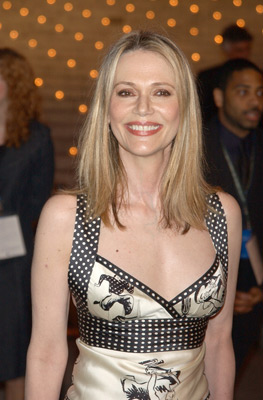

#6667 Bailey - Ein Freund fürs Leben
Alternativ: A Dog's Purpose

 IMDB-Wertung: 7.0 / 10
IMDB-Wertung: 7.0 / 10  Metascore: 43
Metascore: 43 
A dog looks to discover his purpose in life over the course of several lifetimes and owners.
Jahr: 2017
Dauer: 100 Minuten
FSK: 0
Land: USA Studio: Universal PicturesTonspuren: DTS - ,
Untertitel:
Auflösung: 1080p (1920x808) Größe: 6092 MB
Genre: Drama, Komödie, Abenteuer, Fantasy, Familie
Regisseur: Lasse Hallström
Drehbuch: W. Bruce Cameron
Soundtrack:
Darsteller:
 Josh Gad als Bailey / Buddy / Tino / Ellie
Josh Gad als Bailey / Buddy / Tino / Ellie Dennis Quaid als Adult Ethan
Dennis Quaid als Adult Ethan-  Peggy Lipton als Adult Hannah
- Bryce Gheisar als Ethan - 8 Years Old
- K.J. Apa als Teen Ethan
 Juliet Rylance als Ethan's Mom
Juliet Rylance als Ethan's Mom- Luke Kirby als Ethan's Dad
 Gabrielle Rose als Grandma Fran
Gabrielle Rose als Grandma Fran- Michael Bofshever als Grandpa Bill
 Britt Robertson als Teen Hannah
Britt Robertson als Teen Hannah Logan Miller als Todd
Logan Miller als Todd- Kirby Howell-Baptiste als Maya
- Pooch Hall als Al
 John Ortiz als Carlos
John Ortiz als Carlos Nicole LaPlaca als Wendi
Nicole LaPlaca als Wendi- Primo Allon als Victor
 Peter Kelamis als Dad's Boss
Peter Kelamis als Dad's Boss- Caroline Cave als Boss's Wife
- Jane McGregor als Rachel
- Robert Mann als Delivery Workman
- Ron Verwymeren als Delivery Workman
- Kelly-Ruth Mercier als Atlanta Vet
- Ross Douglas Noble als Puppy Mill Customer
- John C. MacDonald als Teammate
 Kwesi Ameyaw als Cop
Kwesi Ameyaw als Cop Michael Patric als Sam
Michael Patric als Sam Paul Jarrett als Police Lieutenant
Paul Jarrett als Police Lieutenant- Christopher Pearce als Policeman
- Kalyn Bomback als Animal Control Yolanda
- Anita Daher als Mother at Shelter
- Rayna Ens-Armstrong als Daughter at Shelter
- Avery Thompson als Tweener Girl
- Aidan Ritchie als Ambulance Attendant
- Brooke Warrington als Bree - 7 Years Old
- Paul Griggs als Hot Dog Vendor
- Tom Young als Hardware Store Employee
- Alicia Johnston als Hysterical Mother
- Evan Martin als Punk Boy , uncredited
- David J. Lyle als Country Vet
- Cory Wojcik als Puppy Mill Owner
- Andrew W. Nolan als Football Coach
- Jordan Butterill als Teammate
- Dean Monroe McKenzie als Detective
- Brent Holtzman als Police Captain
- Violet Haas als Elderly Woman
- Darcy Higginbotham als Farmhand
- Danesha Lee als Animal Control Officer
- Dan De Jaeger als Father at Shelter
- Reine Lecuyer als Daughter at Shelter
- Mackenzie Thornton als Tweener Girl
Datei: X:\2-Dilogie(A-F)\Bailey\Bailey - Ein Freund fürs Leben (2017, FSK0, 1920x808).mkv seit 02.08.2017
Festplatte: HD Collection-2(A-Z)-3(A-M)
 Alle Filme aus Gruppe '2-Dilogie(A-F)\Bailey'
Alle Filme aus Gruppe '2-Dilogie(A-F)\Bailey'